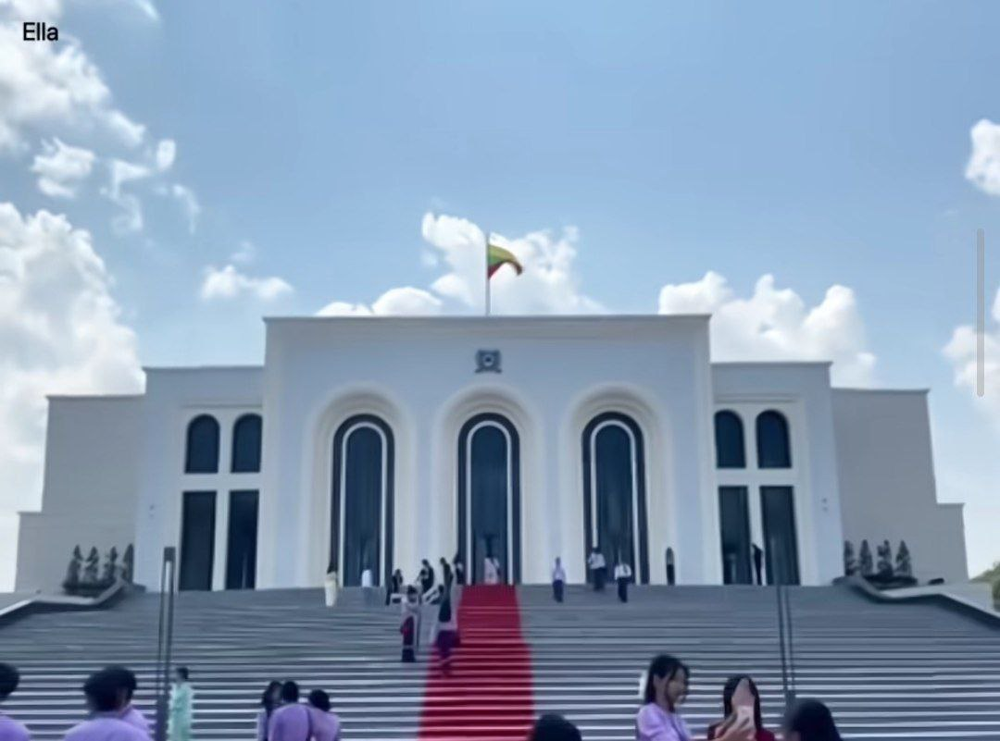

မိတ်ဆက် / Introduction
နေပြည်တော် အစိုးရ အကယ်ဒမီ (Naypyitaw State Academy – NSA) သည် နေပြည်တော် ပြည်ထောင်စုနယ်မြေ၊ ဇေယျာသီရိမြို့နယ်တွင် တည်ရှိသော နိုင်ငံပိုင် တက္ကသိုလ်တစ်ခု ဖြစ်ပါသည်။ ၂၀၂၂ ခုနှစ်၊ နိုဝင်ဘာလ ၉ ရက်နေ့တွင် ပင်တိုင်ဖွင့်လှစ်ခဲ့ပြီး မြန်မာနိုင်ငံ၏ ပထမဆုံး Faculty System (ဌာနပေါင်းစုံ စနစ်) ဖြင့် လည်ပတ်သော တက္ကသိုလ် ဖြစ်သည်။
Naypyitaw State Academy (NSA) is a state-run comprehensive university located in Zabuthiri Township, Naypyidaw Union Territory, Myanmar. Inaugurated on 9 November 2022, NSA is Myanmar's first university to adopt the Faculty-Based System — a multi-disciplinary model aligned with international university standards — replacing the traditional single-department approach used by most Myanmar universities.
Operating under the motto "ပညာ ဧဝ အဓိပတိ" (The Leading University for Wisdom), NSA was established with a clear mission: to transform Naypyidaw into a genuine education city, offering high-quality degree programs in one place so that students from the capital — especially children of civil servants — no longer need to relocate to Yangon or Mandalay to access higher education.
Starting with just 126 students across 4 faculties in 2022–2023, NSA has grown rapidly to around 1,500 students across 7 faculties and 18+ departments by 2024–2025, also launching postgraduate programs in Sports Science, Social Sciences, and a joint Diploma in Diplomacy with the Myanmar Diplomatic Training School.
Why Choose NSA?
Myanmar's First Faculty-Based University
NSA broke new ground by adopting a Faculty System aligned with international universities — giving students the experience of studying in a genuinely multi-disciplinary academic environment, not a single-subject institution.
Study in the Capital — No Relocation Needed
NSA was built specifically to reduce student migration from Naypyidaw to Yangon and Mandalay. Students can pursue full degree programs without leaving the capital, cutting living costs and family separation.
Student-Centred Learning with Modern Technology
NSA's teaching approach emphasises student-centred learning supported by smart classrooms, e-library access, campus-wide internet, and modern science and computer laboratories.
Rapid Growth — More Programs Every Year
From 4 faculties in 2022 to 7 faculties and postgraduate programs by 2024–2025, NSA is expanding faster than almost any other university in Myanmar — more programs are being added each academic year.
Unique Joint Programs
NSA offers Myanmar's only Diploma in Diplomacy (DID) — a joint program with the Myanmar Diplomatic Training School (Ministry of Foreign Affairs) — a rare opportunity unavailable at most Myanmar universities.
Focus on Social Impact
NSA's Faculty of Social Science trains graduates specifically to work with vulnerable groups — children, women, disabled people, and the elderly — addressing Myanmar's pressing social development needs.
Enrollment Growth
✅ NSA's Academic Growth (2022–2025)
- 2022–2023: 126 students · 4 faculties · 12 specialized courses
- 2023–2024: ~800 students · 5 faculties · Expanded programs
- 2024–2025: ~1,500 students · 7 faculties · 18+ departments · Master's programs launched
- First graduates expected in academic year 2026–2027
Campus Gallery

Main Campus

Lecture Halls

Digital Library

Student Activities
Academic Structure — 7 Faculties
NSA launched with 4 faculties in 2022 and expanded to 7 by 2024–2025
Faculty of Arts
B.A. · UndergraduateOne of NSA's four founding faculties. Covers a broad range of humanities disciplines, training graduates for government service, academia, diplomacy, and creative fields.
Faculty of Science
B.Sc. · UndergraduateOne of NSA's founding faculties. Offers the full range of pure and applied sciences, supported by modern laboratories, computer science facilities, and campus-wide internet infrastructure.
Faculty of Economics
B.Econ. · UndergraduateOne of NSA's founding faculties. Covers the full spectrum of economics, finance, and management — preparing students for careers in government economic planning, private business, banking, and international trade.
Faculty of Law
LL.B. · UndergraduateOne of NSA's founding faculties. Offers the LL.B. (Bachelor of Laws) degree and related legal studies — located in the nation's capital, providing a unique advantage for students aiming for government legal roles, the judiciary, and civil administration.
Faculty of Medicine
M.B.,B.S. · UndergraduateLaunched in November 2023 with an initial intake of 31 students — NSA's Faculty of Medicine marks a significant milestone, bringing medical education directly to Naypyidaw and reducing the need for students to travel to Yangon or Mandalay for the M.B.,B.S. program.
Faculty of Social Science
B.S.Sc. · Undergraduate + Master'sAdded as NSA expanded in 2024–2025. Specifically focused on training graduates to work with vulnerable groups — children, women, disabled persons, and the elderly — addressing Myanmar's growing social development needs. Master's programs were launched in 2024–2025.
Faculty of Sports Education
B.P.E. · Undergraduate + Master'sAdded in 2024–2025 as NSA expanded to 7 faculties. Covers Sports Science and Physical Education — training coaches, sports administrators, and physical education teachers. A Master's program in Sports was also launched in 2024–2025.
🎓 Special Program — Diploma in Diplomacy (DID)
NSA offers a joint Diploma in Diplomacy (DID) in partnership with the Myanmar Diplomatic Training School (Ministry of Foreign Affairs). This unique program is currently accepting applications via the Naypyidaw branch. Visit nsa.edu.mm for the latest announcements.
Campus Life at NSA
A modern capital-city campus built from the ground up
Smart Classrooms
All NSA classrooms are equipped with smart blackboards and modern audio-visual technology — part of NSA's commitment to student-centred learning with modern teaching tools.
Digital Library & E-Library
NSA's library offers both physical and digital resources, with campus-wide internet connectivity ensuring students and researchers have access to academic materials at all times.
Sports & Gymnasium
As the only Myanmar university with a dedicated Faculty of Sports Education, NSA's campus includes sports facilities and a gymnasium to support both academic and student life programs.
✅ Campus Facilities
- Modern lecture buildings and convocation / graduation hall
- Advanced science and computer laboratories
- Digital library with e-library access
- Smart blackboards in all classrooms
- Campus-wide internet connectivity
- Sports facilities and gymnasium
- Student dormitories (planned / under construction)
- Administrative and academic offices
📍 Campus Background
NSA's campus is built on the site originally allocated for a Sports University project that was abandoned. Construction began in April 2022, and the university was inaugurated on 9 November 2022 by the Chairman of the State Administration Council. The site is in Zabuthiri Township, Naypyidaw Union Territory.
Career Opportunities
Where can NSA graduates go? — Multi-faculty, multi-pathway
Government & Civil Service
As a capital-based university, NSA graduates — especially from the Law, Economics, and Arts faculties — are well-positioned for civil service roles in Naypyidaw's government ministries, departments, and agencies.
All FacultiesLegal & Judiciary
Law faculty graduates can pursue the LL.B. degree and enter the legal profession as lawyers, legal advisors, court officers, or government legal officials — with Naypyidaw's concentration of judicial and administrative bodies being a clear advantage.
Faculty of LawEconomics, Finance & Business
Economics faculty graduates can enter banking, financial management, government economic planning, statistics, and private sector management — increasingly in demand as Myanmar develops its capital region.
Faculty of EconomicsMedicine & Healthcare
M.B.,B.S. graduates can practice medicine across Myanmar's public and private health systems — with a particular advantage for placements in Naypyidaw's hospitals and government health agencies.
Faculty of MedicineScience, Research & Technology
Science faculty graduates enter research, teaching, laboratory science, IT, geology, and environmental science — with Computer Science graduates feeding into Myanmar's growing technology sector.
Faculty of ScienceDiplomacy & International Affairs
Graduates of the joint Diploma in Diplomacy (DID) — offered in partnership with the Myanmar Diplomatic Training School — can pursue careers in Myanmar's Foreign Affairs Ministry, international organizations, and diplomatic service.
DID Joint ProgramSocial Work & Development
Social Science graduates are trained specifically for work with vulnerable groups — children, women, disabled persons, and the elderly — through NGOs, government social welfare departments, and international organizations.
Faculty of Social ScienceSports Coaching & Physical Education
Sports Education graduates become coaches, PE teachers, sports administrators, and sports science researchers — supporting Myanmar's national sporting infrastructure and school physical education system.
Faculty of Sports EducationSectors & Employers
Latest Updates
Recent news, events, and developments at NSA
Third Anniversary Ceremony — 1 November 2025
NSA celebrated its Third Anniversary at the academy's function hall. The Union Minister for Education attended and recognized NSA for producing intellectuals, promoting creativity and innovation, and advancing higher education quality in Myanmar's capital.
Lecturer & Demonstrator Recruitment — 18 Subjects
NSA announced recruitment of lecturers and demonstrators for 18 subjects across teaching departments. Application deadline: 28 April 2026. Salary range: MMK 216,000–226,000 (basic + allowances). Applications available at nsa.edu.mm or directly at the NSA Administration Department.
Master's Programs in Sports & Social Sciences
NSA expanded to postgraduate level in 2024–2025, launching Master's programs in Sports Science and Social Sciences — making it one of the few recently-founded universities in Myanmar to offer postgraduate study in these disciplines.
Diploma in Diplomacy (DID) — Now Accepting Applications
NSA's unique joint program with the Myanmar Diplomatic Training School (Ministry of Foreign Affairs) is currently accepting applications at the Naypyidaw branch. The Diploma in Diplomacy (DID) is one of the most distinctive programs available at any Myanmar university. Apply via nsa.edu.mm.
✅ Strategic Objectives
- Develop Naypyidaw as a full Education City — reducing student migration to Yangon and Mandalay
- Produce high-quality professionals focused on creativity, innovation, and research
- Serve civil servant families — priority access for children of government employees in Naypyidaw
- Address social issues through trained Social Science graduates working with vulnerable groups
- Implement international-standard, faculty-based curriculum aligned with global universities
- First graduates expected in academic year 2026–2027